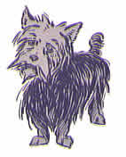
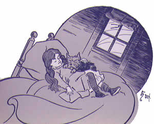
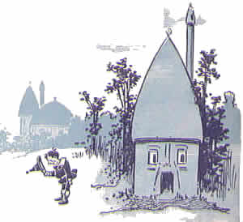
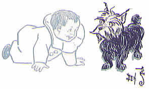

lo se mànci te màkfa pe la .oz.
sei la selpà'i cu fànva
ni'o ni'o pa mo'o
lo vilcarbì'e
ni'o la .dorotis. cu xàbju lo mìdju be lo gànra sastù'a pe la .kanzas. fi'o kànsa la nakfàmti .xenris. ku noi te cànge ku'o .e la fetfàmti .em. ku noi spèni lo te cànge .i lo zdàni cu cmàlu ki'u lo nu lo mùdri poi zy. ke'a zìlzba cu jai sàrcu fai lo ka lo càrce cu bèvri ce'u ve'a lo mìnli be li so'i .i zy. se pàgbu lo vo bìtmu .e lo lòldi .e lo drùdi vu'o noi sùmji fa lo pa kùmfa .i ky. vàsru lo furtìrse se jvìnu tòknu .e lo kajnytà'e be lo pàlta be'o .e lo jùbme .e lo ci ji'i vo stìzu .e lo ckàna .i la nakfàmti .xenris. jo'u la fetfàmti .em. cu pònse lo bàrda ckàna be bu'u pa lo kòjna .i je la .dorotis. cu go'i lo cmàlu ckàna be bu'u lo dràta kòjna .i zàsti fa no sai drùsro .e no lolnitkù'a po'u na'e bo lo cmàlu kèvna poi pu te kàkpa lo lòldi zi'e poi se cmène «lu vilcarbì'e lolnitkù'a li'u» noi lo lànzu ka'e klàma la'e ke'a va'o lo nu pa lo bàrda carbì'e cu tolcànci fau lo nu tsàli bànzu lo nu da'i màrxa ro lo dìnju pe lo ra ve mùvdu .i plùta lo kèvna fo lo lòlvro be bu'u lo lòldi mìdju be'o poi lo rajysèrti cu cnìta ve klàma lo cmàlu je mànku kèvna
ni'o la .dorotis. ca lo nu sànli bu'u lo zdàni vòrme gi'e ru'u càtlu cu ka'e vìska fa'a ro da no na'e bo lo gànra je grùsi sastù'a .i je no trìcu .e no zdàni cu zvàti lo gànra je pìnta tùmla poi kùspe lo kòrbi be lo tsàni bu'u ro lo fàrna .i lo sòlri nu glàre cu ba'o rìnka lo nu lo se plìxa tùmla cu bìnxo lo grùsi pèsxu poi se fènra lo cmàlu .i lo sràsu ku ji'a sai na crìno .i ki'u bo lo solgù'i cu ba'o jèlgau lo jìpno be lo clàni sràsu co'u lo nu sy. cu skàri lo mìntu grùsi se skàri poi se vìska bu'u ro da .i pa roi ku lo zdàni cu pu se cintypù'i .i ku'i lo sòlri cu gàsnu lo nu lo cìnta cu vàsru lo vàrboi .i je lo càrvi cu lùmci vìmcu .i je ca ku lo zdàni cu kàndi gi'e grùsi vau du'i tu'a ro dràta
ni'o la .em. ca lo nu klàma ti te zu'e lo nu bu'u xàbju cu cìtno je mèlbi spèni .i lo sòlri jo'u lo brìfe cu cnègau .ebu ji'a .i crìgau lo kànla lo ka càrmi kei ja'e lo nu lo kànla cu sàmpu grùsi .i crìgau lo mòlmla .e lo ctèbi lo ka xùnre kei ja'e lo nu grùsi fa vo'e ji'a .i .ebu cìnla gi'e ca no roi cìsma .i ca lo nu la .dorotis. noi rìrcau cu pa re'u klàma .ebu kei .ebu tai se spàji lo nu cmìla pe lo vèrba ja'e lo nu krìxa gi'e da'èrgau lo xànce lo rìsna ca ro nu tìrna lo glèki vòksa be la .dorotis .i .ebu za'o càtlu lo cmàlu nìxli fau lo nu mànci lo nu zàsti fa da poi jai mu'i cmìla fai ny
ni'o la nakfàmti .xenris. cu no roi cmìla .i xy. to'e làzni gùnka co'a lo cèrni je co'u lo nìcte gi'e na djùno lo du'u lo si'o glèki cu mo kau .i xy. ji'a cu grùsi fe'e co'a lo ri clàni xèjykre je fe'e co'u lo rùfsu cùtci gi'e se jvìnu lo jùrsa .e lo jùnri gi'e so'u roi tàvla
ni'o du la .totos. fa lo jai gau cmìla be fai la .dorotis .i ty. boi dy. nùrgau lo nu bìnxo lo grùsi dùnli be lo dràta vànbi .i la .totos. na grùsi .i ty. cmàlu ke xèkri gèrku gi'e se kèrfa lo clàni ke sìlka sìmlu gi'e se kànla lo cmàlu xèkri poi glèki kalga'òsli bu'u lo re mlàna be lo xàjmi je cmàtce nàzbi .i la .totos. cu kèlci ze'a lo mùlno djèdi .i je la .dorotis. cu kelkànsa gi'e mùtce lo ka se dìrba ty
ni'o ku'i ca lo càbdei cu na kèlci .i la nakfàmti .xenris. cu zùtse lo vòrme sèrti gi'e xànka càtlu lo tsàni noi grùsi ba'e zmàdu lo fàdni .i la .dorotis. cu sànli bu'u lo vòrme fau lo nu jgàri la .totos. lo bìrka kei gi'e si'a càtlu lo tsàni .i la fetfàmti .em. ca'o lùmci lo pàlta
ni'o ra'i lo dàrno bèrti cu tìrna lo dìzlo tònga se pàtcmo pe lo brìfe .i je la nakfàmti .xenris .e la .dorotis. cu vìska lo nu lo sràsu cu se krorì'a lo jbibì'o viltì'a tai tu'a lo bòxna .i ba bo lo kìnli nu sìclu bu'u lo vàcri ra'i lo snànu cu cfàri .i je lo re da ca lo nu fa'a càtlu cu vìska lo cmàlu bòxna be lo sràsu bei ra'i lo di'u fàrna ku ji'a
ni'o ca bo sùksa fa lo nu la nakfàmti .xenris. cu sa'irbì'o
ni'o «lu lo vilcarbì'e ti mùvdu doi .em. –sei xy. fi lo spèni cu clàdu cùsku– .i mi ba kùrji lo dànlu li'u» .i ba bo bàjra fa'a lo ta'òzda noi lo bàkni jo'u lo xìrma cu se sètca fi ke'a
ni'o la fetfàmti .em. cu co'u gùnka gi'e klàma lo vòrme .i .ebu ca lo nu ze'i pa re'u càtlu cu djùno lo du'u ma kau ckàpe
ni'o «lu ko sùtra doi .dorotis. –sei .ebu krìxa– .i ko bàjykla lo lolnitkù'a li'u»
ni'o la .totos. cu plìpe fi lo bìrka be dy. gi'e sezyselmràgau ni'a lo ckàna .i je lo nìxli cu co'a cpàcu klàma .i la fetfàmti .em. fau lo nu tèrpa mùtce cu kàrgau lo lòlvro be bu'u lo lòldi gi'e fa'a ni'a cpàre lo rajysèrti se ka'a lo cmàlu je mànku kèvna .i la .dorotis. cu ro mai kàvbu la .totos. gi'e co'a jèrsi lo fetfàmti .i ca lo nu ba'o xàdba pàgre lo kùmfa cu se sànce lo clàdu sàvru fa lo brìfe .i je lo zdàni cu tai rùfsu slìlu ja'e lo nu dy. gau co'u sànli gi'e jai sùksa fai lo ka tsebì'o lo lòldi
ni'o ba bo lo cìzra cu fàsnu
ni'o lo zdàni cu re ji'i ci roi càrna gi'e màsno lo ka galzè'a pa'o lo vàcri .i la .dorotis. cu cìnmo lo sìmsa be lo ka galzè'a fau lo nu nènri lo vartìsyboi
ni'o lo bèrti fa'u snànu brìfe cu pensì'u lo stùzi be lo zdàni ja'e lo nu zy. bìnxo lo sàtci mìdju be lo vilcarbì'e .i bu'u lo mìdju be lo vilcarbì'e lo vàcri cu ta'e bìfcau .i ku'i lo bàrda ni lo brìfe cu dànre bu'u ro lo mlàna be lo zdàni cu rìnka lo nu lo zdàni cu zènba je zènba lo ka gàltu kei co'u lo nu zvàti lo pràne galràipau be lo vilcarbì'e .i je stàli gy. gi'e to'o se bèvri ve'a lo mìnli be li so'i se kai lo ka frìli dùnli lo ka bèvri lo pìmlu
ni'o mùtce lo ka mànku .i je lo brìfe cu màbla cmòni ru'u la .dorotis .i ku'i dy. co'a sànji lo du'u se màrce se frìli .i ba lo pa moi be lo su'o mei co nu ru'u càrna .e lo pa dràta jai ca nu lo zdàni cu mùtce lo ka mlàpau càrna cu cìnmo lo ka toljùrsa se slìgau tai tu'a lo cìfnu pe bu'u lo slìcka
ni'o la .totos. na nèlci .i bàjra ru'u bu'u lo kùmfa fau lo nu zvàti nu'i ge ca da ti nu'u gi ca de ta nu'u fau lo nu clàdu cmòni .i ku'i la .dorotis. cu smàji zùtse lo lòldi gi'e dènpa te zu'e lo nu zgàna lo da'i ba fàsnu
ni'o pa roi ku la .totos. cu bìnxo lo dùkse be lo ka jìbni lo kàlri lòlvro kei gi'e pa'o fàrlu .i pa mai lo cmàlu nìxli cu jìnvi lo du'u ba'o cìrko ty .i ku'i ba zi vìska lo nu pa lo kèrlo cu pàgre lo vòrme .i ki'u bo lo bàrda ni dànre pe lo vàcri cu stògau ty. lo ka gàltu kei ja'e lo nu na ka'e fàrlu .i ny. cpàre fi lo vòrme gi'e co'a jgàri la .totos. fo lo kèrlo gi'e làcpu ty. fa'a lo nènri be lo kùmfa gi'e ba bo ga'òrgau lo lòlvro te zu'e lo nu no se jmìna snùti ka'e fàsnu
ni'o so'i lo càcra cu se fànmo .i je màsno fa lo nu la .dorotis. cu bìnxo lo ka co'u tèrpa .i ku'i dy. cìnmo lo ka sèpcni mùtce .i je lo brìfe cu tai clàdu se sànce ja'e lo nu dy. na ru'e bìnxo lo tinynalkà'e .i ca lo tolfà'o dy. kùcli lo du'u xu kau dy. ba se màrxa ja'e lo so'i spìsa va'o lo nu lo zdàni cu di'a fàrlu .i ku'i fau lo nu lo càcra cu se fànmo .e lo nu no xlàtce cu fàsnu kei dy. co'u xànka gi'e zu'ejdi lo ka smàcni dènpa gi'e fàcki lo du'u lo bàlvi cu mo kau .i ro mai dy. cpàre lo dèsku lòldi lo vo'a ckàna gi'e vrebì'o lo gàpru .i je la .totos. cu jèrsi gi'e vrebì'o lo jìbni be dy
ni'o to'e ki'u nai lo nu lo zdàni cu slìlu .e lo nu sàvru se sànce fa lo brìfe kei la .dorotis. cu ba zi ga'òrgau lo kànla gi'e sipybì'o
ni'o ni'o re mo'o
lo nu pènmi lo màxpre
ni'o la .dorotis. cu se cikrì'a lo jènca poi tai sùksa gi'e tai jùrsa vau ja'e lo nu da'i la .dorotis. va'o lo nu na cpàna lo rànti ckàna cu se xràni .i da'i nai lo jènca cu rìnka lo nu dy. cu bàrda vàsxu gi'e kùcli lo du'u ma kau pu fàsnu .i je la .totos. cu pùnji lo ri lènku ke cmàlu nàzbi lo flìra be dy. gi'e bàdri pàtcmo .i la .dorotis. cu tsebì'o gi'e sajbì'o lo nu ge nai lo zdàni cu mùvdu gi na'e mànku ri'a lo nu lo càrmi solgù'i cu pàgre lo cànko fau lo nu cùlgau lo cmàlu kùmfa .i dy. plìpe fi lo ri ckàna gi'e bàjra fau lo nu la .totos. cu jìbni jèrsi kei gi'e kàrgau lo vòrme

ni'o lo cmàlu nìxli cu mànci krìxa gi'e ru'u càtlu fau lo nu lo kànla cu bànro je bànro se ja'e lo nu vìska lo tai se mànci
ni'o lo vilcarbì'e pu toljùrsa mùtce pùnji (to ma'i lo vilcarbì'e toi) lo zdàni lo mìdju be lo se mànci mèlbi gùgde .i zvàti fa lo kùkte sastù'a pe lo mèlbi trìcu poi se dàndu lo rìcfu je kùkte grùte .i lo fòldi be lo mlècai xrùla cu zvàti ro lo mlàna .i je lo cìpni pe lo rìrci je càrmi pìmlu cu sànga gi'e na'irsùtyvoi ne'i lo trìcu .e lo dèmspa .i va lo tòrdu mìlxe da cmàlu rìrxe gi'e mùvdu je mìrcai pàgre lo jbìni be lo crìno sastù'a gi'e kàndi bàcru se pi'o lo vòksa poi mùtce lo ka jai te ckìre fi lo cmàlu nìxli poi xàbju ze'a lo tai clàni lo sùdga je grùsi sastù'a
ni'o la .dorotis. ca lo nu ca'o kùcli càtlu lo cìzra joi mèlbi vànbi cu co'a sànji lo poi fa'a dy. klàma ku'o gùnma be lo cìzrai be lo ro prènu poi dy. ke'a ba'o vìska .i lo prènu cu cmàmau lo màkcu poi dy. ke'a se slàbu .i ku'i ji'a na mùtce lo ka cmàlu .i je'u py. sìmlu lo ka cladù'i la .dorotis. ku noi bànro sùtra ma'i lo na'àsmi vèrba kei gi'e ku'i jvìnu sìmlu lo ka na'àzma dy. li so'i
ni'o gùnma lo ci nànmu .e lo pa nìnmu .i je ro se go'i cu dàsni lo cìzra .i dàsni lo cùkla màpku poi kònju fi lo cmàlu poi gùtci li pa lo ni gàpru lo stèdu ku'o ku'o zi'e pe lo màpku srùri ke cmàlu jànbe poi jabysèlsna lo tìtla ca lo nu mùvdu .i lo màpku pe lo nànmu cu blànu .i je lo màpku pe lo cmàlu nìnmu cu blàbi .i je ny. cu dàsni lo blàbi pàstu poi cìnje dàndu lo jànco .i py. se bàrna lo so'i tàrci poi càrmi bu'u lo solgù'i tai tu'a lo tàbjme .i lo nànmu cu dàsni lo blànu pe lo mìntu selskàlei pe lo màpku gi'e dàsni lo xàmgu se spàli cùtci poi lo blànu bòlci cu jòrne ke'a lo jìpno .i lo nànmu (to la .dorotis. cu jìnvi toi) cu kàijbi lo ka dùnli la nakfàmti .xenris. lo ka tolcì'o .i ki'u bo re lo nànmu cu se xèjykre .i ku'i lo cmàlu ke tolcì'o nìnmu cu ju'o sai tolcì'o zmàdu mùtce .i lo flìra be ny. cu se gàcri lo cìnje .i lo kèrfa be ny. cu na ru'e blàbi .i je ny. cu tìnsa nàlmli càdzu
ni'o lo bi'u nai prènu ca lo nu jbibì'o lo zdàni noi la .dorotis. cu sànli lo ke'a vòrme cu klàsti gi'e làuble càsnu vau tai lo nu tèrpa lo nu zènba lo ka jìbni .i ku'i lo cmàlu ke tolcì'o nìnmu cu klàma la .dorotis. gi'e krobì'o rìnsa gi'e cùsku se pi'o lo tìtla vòksa
ni'o «lu do zanvì'e doi nòbli te màkfa lo gùgde be la màxpre .i mi'a do tai ckìre lo nu do ba'o càtra la pàlci termafyfè'i pe la stùna kei .e lo nu tolpìfygau lo mi'a se gùgde li'u»
ni'o la .dorotis. cu tinjù'i lo se cùsku fau lo nu se cfìpu .i ki'u ma lo cmàlu nìnmu cu te cmène dy. «lu te màkfa li'u» gi'e xùsra lo du'u dy. càtra la pàlci termafyfè'i pe la stùna .i la .dorotis. cu zernalfù'e je nalckàpe ke cmàlu nìxli gi'e se bèvri lo vilcarbì'e ve'a lo mìnli be li so'i .i je ze'a pi ro lo nunjì'e dy. no roi càtra da
ni'o ku'i lo cmàlu nìnmu cu za'a kànpe lo nu dy. cu spùda .i se ki'u bo la .dorotis. se cau lo nu dènpa cu cùsku «lu do mùtce lo ka xèndo .i ku'i ju'o da se srèra .i mi no da càtra li'u»
ni'o «lu se ju lo do zdàni cu co'e –sei lo cmàlu ke tolcì'o nìnmu fau lo nu cìsma cu cùsku– .i je la'e di'u mìntu .i ko càtlu –sei ny. fau lo nu degjà'o lo kòjna be lo zdàni cu di'a co'e– .i lo re jàmfu be ty. cu za'o bàncu fi lo cnìta be lo mùdri blìku li'u»
ni'o la .dorotis. cu càtlu gi'e krìxa co tèrpa .i je'u va ku lo cnìta be lo kòjna be lo bàrda kàmju poi lo zdàni cu se sàrji ke'a cu kràsi lo re jàmfu poi dàsni lo rìjno cùtci pe lo kìnli cràpau
ni'o «lu ĭi ĭi –sei la .dorotis. cu tèrpa krìxa be fau lo nu xànce jalsìmgau– .i ju'o lo zdàni pu fàrlu ta .i .ei mi'o mo li'u»
ni'o «lu no da se bìlga –sei lo cmàlu nìnmu cu nalselrà'u cùsku– li'u»
ni'o «lu ku'i ta mo –sei la .dorotis. cu rètsku– li'u»
ni'o «lu ke'u ta me la pàlci te màkfa pe la stùna –sei lo cmàlu nìnmu cu spùsku– .i se pìnfu ro la màxpre ze'a lo nànca be li so'i fau lo nu la màxpre cu sèlfu ze'a lo nìcte jo'u lo dònri .i ca ku ro la màxpre cu zìfre gi'e ckìre do lo nu xagzù'e li'u»
ni'o «lu la màxpre cu mo –sei la .dorotis. cu te prèti– li'u»
ni'o «lu my. se gùgde lo vi gùgde pe la stùna ge'u noi la pàlci termafyfè'i pu tùrni li'u»
ni'o «lu xu do màxpre –sei la .dorotis. cu rètsku– li'u»
ni'o «lu na go'i .i ku'i mi pèndo my. to'e ki'u nai lo nu mi xàbju lo gùgde pe la bèrti .i la màxpre ca lo nu vìska lo nu lo te màkfa pe la stùna cu mòrsi cu bènji lo nòtybei mi .i je mi klàma zi .i la te màkfa pe la bèrti li'u»
ni'o «lu ŭe sai –sei la .dorotis. cu krìxa– .i xu do jètnu termafyfè'i li'u»
ni'o «lu je'u go'i –sei lo cmàlu nìnmu cu spùsku– .i ku'i mi vrùde termafyfè'i .i je lo prènu mi pràmi .i mi vlìpa mlèca la pàlci termafyfè'i ku poi vi tùrni .i se va'o nai bo da'i ba'e mi pu tolpìfygau lo prènu li'u»
ni'o «lu ku'i mi pu srùma lo du'u ro termafyfè'i cu pàlci –sei lo nìxli noi xàdba tèrpa lo nu jìkca lo jètnu termafyfè'i cu cùsku– li'u» .i «lu la'e di'u se srèra .i pu zàsti fa lo vo po'o termafyfè'i bu'u lo mùlno gùgde pe la .oz .i re boi ty. poi xàbju la bèrti fa'u la snànu cu vrùde termafyfè'i .i mi djùno lo du'u jètnu kei ki'u lo nu mi me lo vo mei .i lo xàbju be la stùna be'o .e lo xàbju be la stìci cu je'u pàlci termafyfè'i .i ku'i ca lo càbna poi nu do ba'o càtra pa boi ty. cu zvàti lo mùlno gùgde pe la .oz. fa pa po'o pàlci termafyfè'i no'u la xàbju be la stìci li'u»
ni'o «lu ku'i –sei la .dorotis. ba lo nu ze'i pènsi cu cùsku– la fetfàmti .em. mi pu jùngau lo du'u lo ro termafyfè'i cu mrobì'o pu za lo nànca be li so'i so'i li'u»
ni'o «lu la fetfàmti .em. cu mo –sei lo cmàlu ke tolcì'o nìnmu cu te prèti– li'u»
ni'o «lu .ebu fetfàmti mi gi'e xàbju la .kanzas. ku noi mi pu klàma fi ke'a li'u»
ni'o la termafyfè'i pe la bèrti cu sìmlu lo ka ze'a pènsi kei fau lo nu lo vo'a stèdu cu nitsàlpo joi lo nu lo kànla cu se fàrna lo lòldi .i ba bo ty. cu fa'a ga'u càtlu gi'e cùsku «lu mi na djùno lo du'u ma kau stùzi la .kanzas .i ki'u bo mi pu no roi tìrna lo nu lo bi'u nai gùgde cu te tàvla .i ku'i ko mi jùngau .i xu ky. cu lùjyklu gùgde li'u»
ni'o «lu ja'a go'i –sei la .dorotis. cu spùsku– li'u»
ni'o «lu ja'o la'e di'u krìnu .i ĭa bu'u lo lùjyklu gùgde no termafyfè'i cu za'o jmìve .i je nai su'o màfcre .a su'o màfpli .a su'o te màkfa cu go'i .i ku'i lo gùgde pe la .oz. pu no roi se lujyklùgau .i ki'u bo mi'a sèpli pi ro lo ve vìmcu be fi lo mùnje .i se ki'u bo za'o me mi'a fa lo termafyfè'i .e lo te màkfa li'u»
ni'o «lu te màkfa fa ma –sei la .dorotis. cu rètsku– li'u»
ni'o «lu la .oz. cu du la bànli te màkfa –sei la termafyfè'i fau lo nu laurjdìkygau lo vòksa ja'e lo nu toncaubà'u cu spùsku– .i .obu vlìpa zei zmàdu lo ro mi'a poi gùnma .i .obu xàbju la ri'òjme tcàdu li'u»
ni'o la .dorotis. cu pu'o da'i te prèti fi lo se jmìna .i ku'i ca ku la màxpre ku noi pu ca'o pu ca'o ne'a smàji sànli cu clàdu cmòni gi'e degjà'o lo kòjna be lo zdàni be'o noi la pàlci termafyfè'i pu ca'o vrèta
ni'o «lu mo li'u» se rètsku lo cmàlu ke tolcì'o nìnmu noi càtlu gi'e co'a cmìla .i lo jàmfu be lo mòrsi termafyfè'i cu ba'o mo'u cànci .i je no da po'u na'e bo lo rìjyska cùtci cu ve vìmcu
ni'o «lu ty. pu tai tolcì'o –sei la termafyfè'i pe la bèrti cu cìksi– ja'e lo nu sùtra lo ka sudbì'o bu'u lo solgù'i .i lo càbna cu fànmo ty .i ku'i lo rìjno cùtci ca me do moi .i je .ei do dàsni li'u» .i ty. tèngau lo bìrka gi'e lèbna lo cùtci .i je ba lo nu dèsygau vìmcu lo pùlce lo nènri be cy. cu dùnda cy. la .dorotis.
ni'o «lu la termafyfè'i pe la stìci pu jgìra tu'a lo va cùtci –sei pa la màxpre cu cùsku– .i je cy. cu vàsru da poi màkfa .i ku'i lo du'u ma kau màkfa zo'u: mi'a pu no roi djùno li'u»
ni'o la .dorotis. cu bèvri lo cùtci lo nènri be lo zdàni gi'e pùnji cy. lo jùbme .i ba bo dy. cu bàrtu xrùti la màxpre gi'e cùsku
ni'o «lu mi càrmi lo ka djìca lo nu xrùti lo mi fetfàmti .e lo mi nakfàmti .i ki'u bo mi bìrti lo du'u ra xànka tu'a mi .i xu do mi ka'e sìdju lo nu mi fàcki lo du'u ma kau plùta li'u»
ni'o la màxpre joi la termafyfè'i cu càtlu sìmxu gi'e ba bo càtlu la .dorotis. gi'e ba bo dèsygau lo vo'a stèdu
ni'o «lu na'e vu bu'u la stùna –sei pa boi my. cu cùsku– cu bàrda kutytù'a .i je no da ka'e pàgre li'u»
ni'o «lu mìntu lo tcìni pe bu'u la snànu –sei lo dràta cu cùsku– .i ki'u bo mi ba'o zvàti gi'e ba'o vìska .i la snànu cu gùgde la vònpre li'u»
ni'o «lu ti'e –sei lo ci moi be lo nànmu cu cùsku mìntu– bu'u la stìci .i je lo va gùgde noi la .ŭinkis. cu xàbju cu se tùrni la pàlci termafyfè'i pe la stìci ge'u ku noi sèfygau do va'o lo nu da'i do lampàgre li'u»
ni'o «lu la bèrti cu zdàni mi –sei lo tolcì'o nìnmu cu cùsku– .i je se kòrbi lo mìntu ke bàrda kutytù'a poi srùri lo vi gùgde pe la .oz .i ŭu ru'a doi pe mi dìrba do bi'ai xàbju kànsa mi'a li'u»
ni'o la .dorotis. cu co'a klàku fi la'e di'u .i ki'u bo dy. cu cìnmo lo ka nonkànsa bu'u lo ro vi fànge prènu .i lo se klàku be dy. cu sìmlu lo ka drìgau la xèndo màxpre .i ki'u bo my. cu ba zi lèbna lo vo'a zbibù'u gi'e si'a co'a klàku .i lo cmàlu ke tolcì'o nìnmu zo'u: ny. toldasybì'o lo ri màpku gi'e lànxe cpànygau lo te kònju lo vo'a nàzbi ca lo nu kàncu cùsku «lu pa .i re .i ci li'u» se pi'o lo jùnri vòksa .i ba zi bo lo màpku cu bìnxo lo tànbo noi te cìska se pi'o lo bàrda je blàbi ke bàkri lèrfu «lu
KO CùRMI LO NU LA .DòROTIS.
CU KLàMA LA RI'òJME TCàDU
li'u»
ni'o lo cmàlu ke tolcì'o nìnmu cu lèbna lo tànbo lo ra nàzbi gi'e rètsku ca lo nu ba'o tcìdu lo vàlsi kei «lu xu do se cmène zo .dorotis. doi dìrba li'u»
ni'o «lu go'i –sei lo vèrba fau lo nu fa'a ga'u càtlu gi'e sùdgau lo se klàku cu spùsku– li'u»
ni'o «lu va'o ku do klàma .ei la ri'òjme tcàdu .i ju'o cu'i la .oz. do ba sìdju li'u»
ni'o «lu ma stùzi lo tcàdu –sei la .dorotis. cu rètsku– li'u»
ni'o «lu lo pràne mìdju be lo gùgde .i se tùrni la .oz. no'u la bànli te màkfa poi mi pu tàvla do ke'a li'u»
ni'o «lu xu .obu xàmgu nànmu –sei lo nìxli cu xànka te prèti– li'u»
ni'o «lu .obu xàmgu te màkfa .i lo du'u xu kau nànmu cu na ka'e se djùno mi .i ki'u bo mi no roi vìska .obu li'u»
ni'o «lu ta'i ma mi ka'e klàma –sei la .dorotis. cu rètsku– li'u»
ni'o «lu .e'i do càdzu .i clàni nu lìtru pa'o lo gùgde poi su'o roi jai plùka gi'e su'o roi mànku joi màbla .i ku'i mi ba pìlno ro lo màkfa làrcu poi mi se slàbu ku'o te zu'e lo nu do se bàndu fi lo ckàpe li'u»
ni'o «lu xu na ku do mi klàma kànsa –sei lo nìxli noi pu co'a jìnvi lo du'u lo cmàlu ke tolcì'o nìnmu ku po'o pèndo cu cpèdu cùsku– li'u»
ni'o «lu na go'i .i mi na kàkne –sei ny. spùda– .i ku'i mi do ba cìnba .i no da dàrsi lo ka crògau lo prènu poi ba'o se cìnba la termafyfè'i pe la bèrti li'u»
ni'o ny. jbìkla la .dorotis. gi'e toljùrsa cìnba dy. lo mèbri .i tolcànci lo ve pèncu be lo nìxli bei lo ctèbi fa lo pa cùkla je càrmi bàrna (to la .dorotis. cu ba za fàcki toi)
ni'o «lu lo dàrgu be la ri'òjme tcàdu cu se gàcri lo pèlxu kìtybli –sei la termafyfè'i cu cùsku– .i se ki'u bo frìli fa lo ka tòlcri .i ko ca lo nu do tolclìva la .oz. cu na tèrpa tu'a .obu gi'e cpèdu lo ka do se sìdju .i pe mi dìrba li'u»
ni'o lo ci màxpre cu dìzlo krobì'o fa'a dy. gi'e zandàpma dy. lo plùka nunlì'u gi'e ba bo to'o càdzu pa'o lo trìcu .i la termafyfè'i cu xèndo ke stèdu mùvdu fa'a la .dorotis. gi'e ci roi càrna fi'o te sànli lo jmatì'e gi'e jai sùksa fai lo ka cànci .i la'e di'u fànza zei mùtce la .totos. ku noi fa'a clàdu gèrcmo ca lo nu ba'o cànci kei ki'u lo nu ty. pu tèrpa lo nu gèrcmo ca lo nu la termafyfè'i cu ca'o zvàti
ni'o ku'i la .dorotis. ki'u lo nu djùno lo du'u ty. termafyfè'i cu kànpe lo nu ty. cu cànci du'i la'e di'u .i je dy. na sai se spàji
ni'o ni'o ci mo'o
lo nu la .dorotis. cu nùrgau la cpitèpygau
ni'o la .dorotis. ca lo nu no dràta cu zvàti cu co'a xàgji .i ja'e bo dy. cu klàma lo kajnytà'e gi'e se va'u kàtna lo nànba noi dy. pùnji lo màtne ke'a .i dùnda lo pi su'o si'e la .totos. gi'e lèbna lo bàktu lo kàjna gi'e bèvri by. lo cmàlu rìrxe gi'e tìsygau by. lo klìna je càrmi djàcu .i la .totos. cu bàjra klàma lo trìcu gi'e co'a bàtci fa'a lo cìpni poi zùtse ty .i la .dorotis. cu klàma te zu'e lo nu cpàcu la .totos. kei gi'e vìska lo tai kùkte grùte poi dàndu lo jìmca ku'o ja'e lo nu jàjgau lo pi so'u si'e fau lo nu jìnvi lo du'u pràne lo ka màpti lo nu jmìna fi lo cèrsai
ni'o ba bo dy. cu xrùti lo zdàni .i je ca lo nu ba'o gàsnu lo xàmgu nu vo'a .e la .totos. cu pìnxe lo lènku je klìna djàcu cu co'a zùkte lo ka brebì'o lo nu lìtru se ka'a la ri'òjme tcàdu
ni'o la .dorotis. cu pònse pa po'o tàxfu .i ku'i je'u ty. jìnsa gi'e dàndu lo gràna be ne'a lo ckàna .i ty. màrji lo gingàmu ne lo blàbi jo'u blànu kùrfa .i je ty. to'e ki'u nai gi lo blànu cu ba'o mìlxe lo ka kadbì'o gi ja'a mèlbi tàxfu .i lo nìxli cu srerivzù'e sezlù'i gi'e dasybì'o lo jìnsa gingàmu bo tàxfu gi'e làsna lo xunblàbi solmàpku lo stèdu be ny .i ny. lèbna lo cmàlu lànka gi'e clùgau ly. lo nànba pe lo kajnytà'e fau lo nu pùnji lo blàbi bùkpu lo gàpru .i ba bo ny. fa'a ni'a càtlu lo ny. jàmfu gi'e sajbì'o lo du'u ma kau ni lo cùtci pe ny. cu làldo
ni'o «lu ju'o ti na bànzu lo clàni nunlì'u doi .totos. –sei dy. cùsku– li'u» .i je la .totos. cu fa'a ga'u càtlu lo flìra be dy. te ga'a lo vo'a cmàlu ke xèkri kànla gi'e dèsygau lo rèbla te zu'e lo nu jàrco lo ka djùno lo du'u dy. ma kau skùdji
ni'o ca bo la .dorotis. cu vìska lo nu cpàna lo lòldi fa lo rìjno cùtci poi pu se pònse la termafyfè'i pe la stùna
ni'o «lu mi kùcli lo du'u xu kau cy. mi màpti –sei dy. fi la .totos. cu cùsku– .i cy. màpti ju'o lo bàrda nu càdzu se pi'o cy .i ki'u bo da'i cy. cu no roi selplidù'e li'u»
ni'o dy. co'u dàsni lo ri tolcì'o ke skàpi cùtci gi'e tròci co dàsni lo rìjno cùtci noi màpti zei pràne dy. tai lo nu da'i cy. pu se zbàsu te zu'e tu'a dy.
ni'o ro mai làfti lo lànka
ni'o «lu ko klàma doi .totos. –sei dy. cùsku– .i mi'o ba klàma la ri'òjme tcàdu gi'e rètsku fi la bànli .oz. fe lo se du'u ta'i ma kau xrùti la .kanzas. li'u»
ni'o dy. ga'òrgau lo vòrme gi'e tèlgau gi'e ràlci sètca lo ckìku lo dàski be lo tàxfu .i ja'e bo fau lo nu la .totos. cu cìkcni ke càdzu jèrsi cu co'a lìtru
ni'o so'o da jìbni dàrgu .i ku'i la .dorotis. na nìtcu lo clàni se dìtcu lo nu tòlcri lo dàrgu poi se gàcri lo pèlxu kìtybli .i ba zi lo tòrdu dy. ca'o càdzu sùtra fa'a la ri'òjme tcàdu fau lo nu lo vo'a rìjno cùtci cu glèki jabysèlsna do'e lo jdàri je pèlxu ke dàrgu sèfta .i lo sòlri cu càrmi te gùsni .i je lo cìpni cu tìtla sànga .i je la .dorotis. cu na sai xlàli cìnmo du'i lo noi ju'o cu'i do ke'a kànpe ku'o nu lo nìxli poi pu jai sùksa fai lo ka se vìmcu fi lo zdàni gùgde gi'e se pùnji fi lo mìdju be lo fànge gùgde cu ja'a no'a
ni'o dy. se spàji ca lo nu ca'o càdzu kei lo nu lo srùri gùgde cu tai mèlbi .i lo cnìci bìtmu cu zvàti lo re mlàna be lo dàrgu gi'e zilcintypù'i lo kùkte blànu .i je ze'o lo bìtmu cu fòldi lo gùrni .e lo te stàgi fa lo so'i rau mei .i za'a la màxpre cu cèrtu te cànge gi'e kàkne lo ka kùrji lo bàrda te crèpu .i di'i ru'e ku la .dorotis. cu lampàgre lo zdàni .i je lo prènu cu bàrkla te zu'e lo nu càtlu dy. gi'e krobì'o fa'a dy. ca lo nu dy. cu lampàgre .i ki'u bo ro da djùno lo du'u dy. pu tùtci lo nu dàspo la pàlci termafyfè'i gi'e sefselfàmgau my .i lo zdàni pe la màxpre cu cizyseljì'u dìnju .i ni'i bo zy. cu slànu .i je drùdi fa lo bolxàdba .i ro boi zy. cu zilcintypù'i fa lo blànu .i ki'u bo bu'u lo vi gùgde pe la stùna lo blànu cu selnèirai skàri
ni'o ca lo nu co'a vànci noi nu la .dorotis. co'a tàtpi lo nu ve'u càdzu kei gi'e co'a kùcli lo du'u .ei dy. ma kau zvàti ze'a lo nìcte zo'u: dy. tolclìva lo zdàni poi nàlmli lo ka bràmau lo dràta .i bu'u lo crìno sastù'a be ca'u zy. cu dànsu fa lo so'i nànmu .e lo so'i nìnmu .i lo mu cmàlu vèrba cu kèlci se rai lo ka clàdu .i je lo prènu cu cmìla gi'e sànga .i fau bo lo ne'a jùbme cu cùlno lo kùkte grùte fa'u nàrge .e lo pèsxu .e lo titnànba .e lo so'i dràta ke xàmgu cìdja
ni'o lo prènu cu xèndo rìnsa la .dorotis. gi'e frìti lo nu dy. cu kànsa py. lo ka vàcysai cìtka .i ki'u bo ti zdàni lo pa cmìma be lo cfùrai be la màxpre ku pe lo gùgde .i je lo pèndo be cy. cu jmàji cy. te zu'e lo nu sàlci lo nu zìfre lo ka na sèlfu la pàlci termafyfè'i
ni'o la .dorotis. cu cìtka lo kùkte vàcysai gi'e se sèlfu lo rìcfu màxpre noi se cmène zo .bok .i ba bo dy. cu tsebì'o lo sfòfa gi'e càtlu lo nu lo prènu cu dànsu
ni'o ca lo nu la .bok. cu vìska lo rìjno cùtci pe la .dorotis. cu cùsku «lu ju'o ru'a do bànli te màkfa li'u»
ni'o «lu ki'u ma –sei lo nìxli cu rètsku– li'u»
ni'o «lu ki'u lo nu do dàsni lo rìjno cùtci gi'e pu càtra la pàlci termafyfè'i .i ji'a lo do tàxfu cu vàsru lo blàbi .i je no na'e bo lo termafyfè'i cu dàsni lo blàbi li'u»
ni'o «lu lo mi tàxfu cu se prìna lo blànu jo'u blàbi kùrfa –sei la .dorotis. fau lo nu xùlgau vìmcu lo cìnje be ty. cu cùsku– li'u»
ni'o «lu do xèndo lo nu dàsni ta –sei la .bok. cu cùsku– .i blànu fa lo skàri pe la màxpre .i je blàbi fa lo skàri pe lo termafyfè'i .i ja'o mi'a djùno lo du'u do xèndo termafyfè'i li'u»
ni'o la .dorotis. cu na djùno lo du'u .ei spùda la'e di'u ma kau .i ki'u bo ro lo prènu cu sìmlu lo ka jìnvi lo du'u dy. termafyfè'i .i je dy. cu ja'a sai djùno lo du'u sa'u dy. fàdni ke cmàlu nìxli gi'e fùnca klàma ri'a lo vilcarbì'e lo cìzra gùgde
ni'o ca lo nu dy. ba'o co'a tàtpi lo nu càtlu lo nundànsu kei la .bok. cu klagì'a dy. lo zdàni nènri noi bu'u ke'a by. dùnda fi dy. fe lo kùmfa poi vàsru lo mèlbi ckàna .i lo ckàgai cu màrji lo blànu bùkpu .i je la .dorotis. cu pànpi sìpna se ru'u cy. co'u lo cèrni
ni'o dy. cìtka lo rìcfu cèrsai gi'e càtlu lo cmàlu ke màxpre cìfnu noi kèlci la .totos. gi'e làcpu lo rèbla gi'e ge krìxa gi cmìla vau tai da poi la .dorotis. cu mùtce lo ka se zdìle ke'a .i la .totos. cu xàmgu cìnri lo ro prènu .i ki'u bo py. cu pu no roi vìska lo gèrku
ni'o «lu ma ni dàrno la ri'òjme tcàdu –sei lo nìxli cu te prèti– li'u»
ni'o «lu mi na djùno –sei la .bok. cu jùnri spùda– .i ki'u bo mi no roi zvàti ty .i xàgmau fi lo prènu fa lo nu dàrno la .oz. va'o lo nu na se cùntu fa py. joi .obu .i ku'i clàni ve klàma la ri'òjme tcàdu .i je lo djèdi be li so'i ba dìtcu .i lo vi gùgde cu rìcfu gi'e plùka .i ku'i do nìtcu lo ka pàgre lo rùfsu je ckàpe stùzi pu lo nu do tolclìva lo fànmo be lo do nunlì'u li'u»
ni'o la'e di'u mìlxe se xànka la .dorotis .i ku'i dy. djùno lo du'u no na'e bo la .oz. cu ka'e sìdju dy. lo nu xrùti la .kanzas .i se mu'i bo dy. cu vìrnu jdìce lo du'u na ba tolselfarbì'o
ni'o dy. tolrìnsa lo pèndo be dy. gi'e za'u re'u co'a lìtru lo pèlxu kìtybli dàrgu .i ca lo nu ba'o klàma ve'a lo mìnli be li so'i cu zu'èjdi lo ka klàsti te zu'e lo nu sùrla .i ja'e bo pàrkla lo gàpru be lo bìtmu poi jìbni lo klàji ku'o gi'e tsebì'o .i lo bàrda grùfoi cu ràgve lo bìtmu .i je lo naldàrno zo'u: dy. vìska lo cpitèpygau noi gàltu zvàti lo gràna te zu'e lo nu fànta lo nu lo cìpni cu jbibì'o lo màkcu gùrni
ni'o la .dorotis. cu cpànygau lo xejnì'a lo xànce gi'e pènsi càtlu la cpitèpygau .i stèdu cy. fa lo cmàlu dàkli noi tersè'a lo sudysràsu zi'e noi lo kànla .e lo nàzbi .e lo mòklu cu pu se cintypù'i te zu'e lo nu sìnxa lo flìra .i lo tolcì'o ke se kiljì'o je blànu màpku poi pa la màxpre pu pònse ke'a cu ba'o se pùnji fi lo gàpru be lo stèdu be cy .i je lo te zilvì'u be lo prènu cu màrji lo blànu tàxfu noi ba'o selplidù'e gi'e ba'o kadbì'o ku'o gi'e ji'a tersè'a lo sudysràsu .i lo jàmfu cu dàsni lo tolcì'o cùtci ne lo blànu jìpno (to dùnli lo se dàsni be lo ro prènu poi xàbju lo vi gùgde toi) .i je lo bi'u nai prènu cu gau gàltu fi lo stàni be lo gùrni se pi'o lo gràna poi pàgre lo trìxe be py.
ni'o ca lo nu la .dorotis. cu ca'o jùnri càtlu lo cìzra je se cintypù'i flìra be la cpitèpygau kei dy. se spàji lo nu vìska lo nu cy. màsno kalgaislìgau .i dy. ca lo cfàri cu jìnvi lo du'u ju'o dy. srèra .i ki'u bo no lo cpitèpygau pe la .kanzas. cu su'o roi kalgaislìgau .i ku'i nau ku lo prènu cu sedyfarmù'u fa'a dy. tai lo te xèndo .i ba bo dy. nitpàrkla lo bìtmu gi'e càdzu fa'a py. fau lo nu la .totos. ru'u lo gràna cu bàjra gi'e gèrcmo
ni'o «lu coi –sei la cpitèpygau cu sùdga vòksa cùsku– li'u»
ni'o «lu xu do pu tàvla –sei lo nìxli fau lo nu mànci cu rètsku– li'u»
ni'o «lu ju'o –sei la cpitèpygau cu spùda– .i ma do li'i càbna li'u»
ni'o «lu lo xàmgu ki'e do'u –sei la .dorotis. cu clìte spùsku– .i ma do li'i càbna li'u»
ni'o «lu mi na cìnmo lo plùka –sei la cpitèpygau fau lo nu cìsma cu cùsku– .i ki'u bo mùtce lo ka tòlzdi kei fa lo nu ca ge lo nìcte gi lo dònri cu tèpygau lo kòrvo li'u»
ni'o «lu xu na kàkne lo ka fa'a ni'a klàma –sei la .dorotis. cu rètsku– li'u»
ni'o «lu na go'i .i ki'u bo lo vi gràna cu pàgre lo mi trìxe .i .e'o va'o gi do vìmcu lo gràna gi mi mùtce lo ka ckìre do li'u»
ni'o la .dorotis. cu pèjgau lo re bìrka gi'e viclàfti lo prènu lo gràna .i ki'u bo py. ri'a lo nu tersè'a lo sudysràsu cu lìnto tcèmli
ni'o «lu ki'e sai do –sei la cpitèpygau ca lo nu ba'o pùnji fi lo lòldi cu cùsku– .i mi cìnmo lo ka cnìno prènu li'u»
ni'o la .dorotis. cu se spàji la'e di'u .i ki'u bo sìmlu lo ka cìzra kei fa lo nu tìrna lo nu lo tersè'a nànmu cu tàvla kei kei .e lo nu vìska lo nu ny. cu krobì'o rìnsa gi'e kànsa càdzu pa'a tu'a dy.
ni'o «lu do me ma –sei la cpitèpygau ca lo nu ba'o pèjgau lo sèvzi gi'e ba'o ta'irvà'u cu rètsku– .i je do ma ca'o klàma li'u»
ni'o «lu mi se cmène zo .dorotis. –sei lo nìxli cu cùsku– gi'e ca'o klàma la ri'òjme tcàdu te zu'e lo nu cpèdu fi la bànli .oz. fe lo ka xrùgau mi la .kanzas. li'u»
ni'o «lu ma stùzi la ri'òjme tcàdu –sei te prèti– .i ji'a la .oz. cu mo li'u»
ni'o «lu ŭe xu do na djùno –sei dy. se spàji spùda– li'u»
ni'o «lu je'u na go'i .i mi na djùno su'o da .i za'a dai mi tersè'a .i se ki'u bo mi na sai se bèsna –sei bàdri spùsku– li'u»
ni'o «lu ŭa –sei la .dorotis. cu cùsku– .i mi do kècti zei mùtce li'u»
ni'o «lu ba'a pei –sei rètsku– va'o lo nu mi do kànsa lo ka klàma la ri'òjme tcàdu zo'u: la .oz. cu dùnda lo bèsna mi li'u»
ni'o «lu mi na ka'e djùno –sei dy. xrùgau– .i ku'i do zìfre lo ka kànsa mi .i ga nai la .oz. na dùnda lo bèsna do gi no da do to'e pràli li'u»
ni'o «lu jètnu –sei la cpitèpygau cu cùsku– .i je'u –sei cy. sìvni ra'ìrgau– mi na se nàbmi lo nu lo tùple .e lo bìrka .e lo xàdni vu'o pe mi cu sudysràsu tersè'a .i ki'u bo mi na ka'e còrtu .i lo nu da'i da stàpa pa lo mi jmadègji gi'a tùnta mi se pi'o lo jèsni cu na vàjni .i ki'u bo mi na kàkne lo ka gànse .i ku'i mi na djìca lo nu lo prènu mi te cmène zo bèbna .i je va'o lo nu lo mi stèdu cu stòdi lo ka cùlno lo po'o sudysràsu jo'u nai lo bèsna zo'u: ta'i ma mi ka'e djùno su'o da li'u»
ni'o «lu mi jìmpe lo du'u do ma kau cìnmo –sei lo cmàlu nìxli noi je'u kècti cu cùsku– .i va'o lo nu do klàma kànsa mi kei mi ba cpèdu fi la .oz. fe lo ka gàsnu ro lo jai se kàkne be se va'u do li'u»
ni'o «lu ki'e do'u –sei ckìre spùda– li'u»